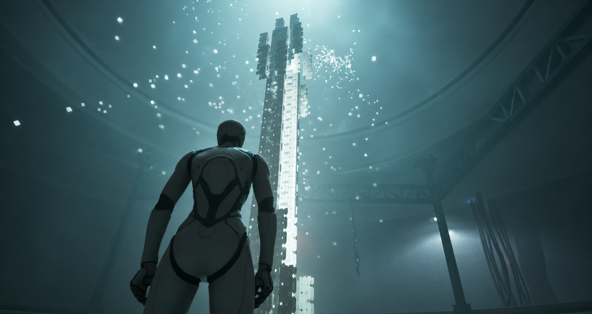

Modulo
raffigurazione digitale tramite Unreal Engine
Progetto
Dalla scultura allo spazio digitale
Modulo è un progetto personale in sviluppo in cui uso Unreal Engine per reinterpretare un lavoro di design industriale come esperienza digitale esplorabile. Il percorso si articola in due stanze, ciascuna dedicata a una scultura. Luce e suono contribuiscono a definire il modo in cui le opere vengono incontrate nello spazio.


Esperienza
Dentro la prima stanza
Nella versione attuale è possibile esplorare liberamente la prima stanza che contiene al suo interno una delle due sculture. Il prossimo sviluppo prevede l'inserimento della seconda scultura e didascalie interattive per approfondire lo spazio durante il percorso


Sviluppo
progettazione dell'ambiente
Modellazione e materiali
Ho modellato gli ambienti in Rhinoceros e li ho importati in Unreal Engine con il plugin Rhino Datasmith Exporter. In Blender ho modellato le sculture e alcuni elementi di allestimento, preparando le mappe UV per l’applicazione dei materiali. Ho utilizzato materiali da librerie esterne, adattando la scala delle texture alle geometrie e regolando alcuni parametri di superficie.
Luce, nebbia ed effetti
Per l’illuminazione ho combinato Point Light, Spot Light e Rect Light in base all’effetto cercato nelle diverse aree. Ho creato la nebbia con Exponential Height Fog, affinandone la resa attraverso variabili di console, e sviluppato gli effetti visivi con Niagara. L’obiettivo era ottenere un’atmosfera sospesa e surreale, mantenendo riconoscibile la matrice industriale del progetto.
Controllo delle luci in tempo reale
Ableton Live comunica con Unreal Engine tramite OSC. Le tracce MIDI di kick, snare e pad pilotano inviluppi i cui valori, ricevuti in Unreal, controllano l’accensione, lo spegnimento e l’intensità delle luci in tempo reale.
Ho costruito il Blueprint a partire dal lavoro di Sem Schreudler e Tristan Gieler, sviluppando in autonomia le parti mancanti nel materiale di riferimento e adattando il sistema alla scena.